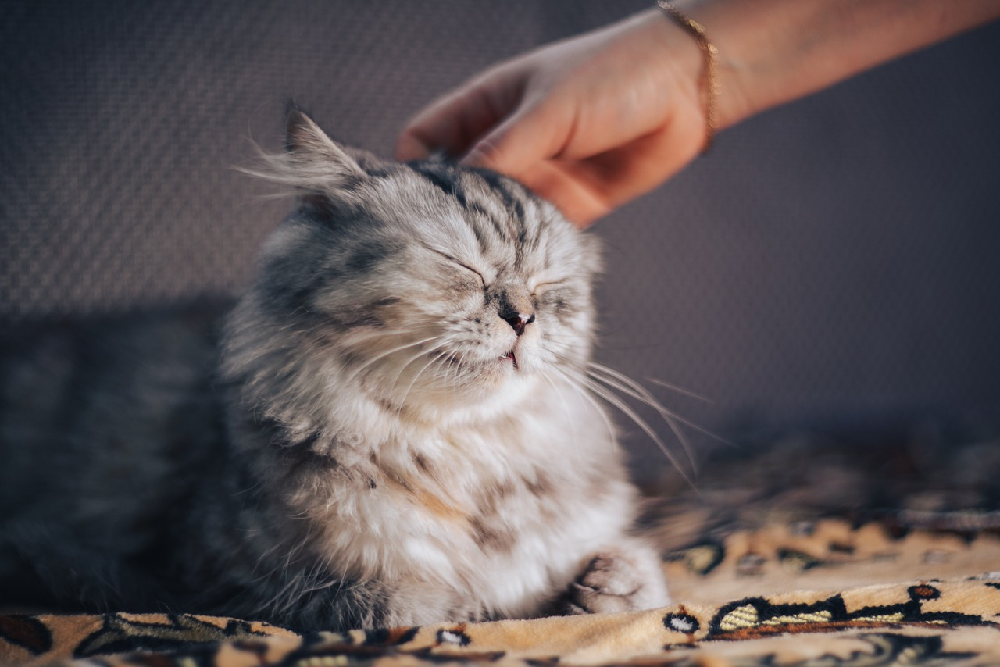
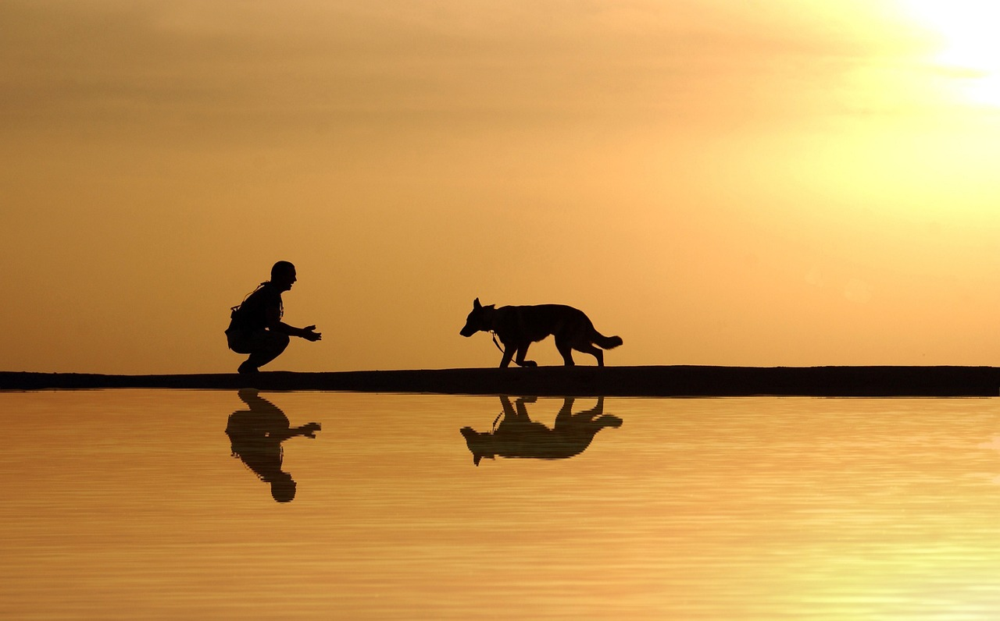

Who We Are
Back in 1984, a scrappy group of friends from far corners of the globe settled in a remote area of Utah’s
high desert … and took the first steps to forever changing the future for pets in shelters.
It’s the story of Best Friends, but it’s much more than the history of a spot on the map. This group of
ordinary but passionate people believed that every pet has a story, too, each one worth saving, each
life individual and important. Today, nearly four decades after they broke ground for a sanctuary in a
remote region of the Southwest, achieving no-kill across the entire country is within reach.
Mission
To bring about a time when
there are No More
Homeless Pets®
Vision
A better world through
kindness to animals
How Can You Help Us?
1. Donate: make a
gift to save lives
When you make a gift to the
animals, you’ll be helping to
save the lives of homeless
pets in New York City and
around the country.
2. Volunteer: give
your time
You can provide hope and
happiness to homeless pets by
volunteering.
3. Foster: open your
heart and home
When you foster a cat or dog in
New York City, you’re not only
providing a safe and loving place
for a pet to learn and grow, but
you’re also helping to make room
for more animals in the shelter.
4. Advocate: create
positive change
You have the power to create
positive change for the
animals in your community.
Join the New York City 2025
Action Team or start your own
today.



